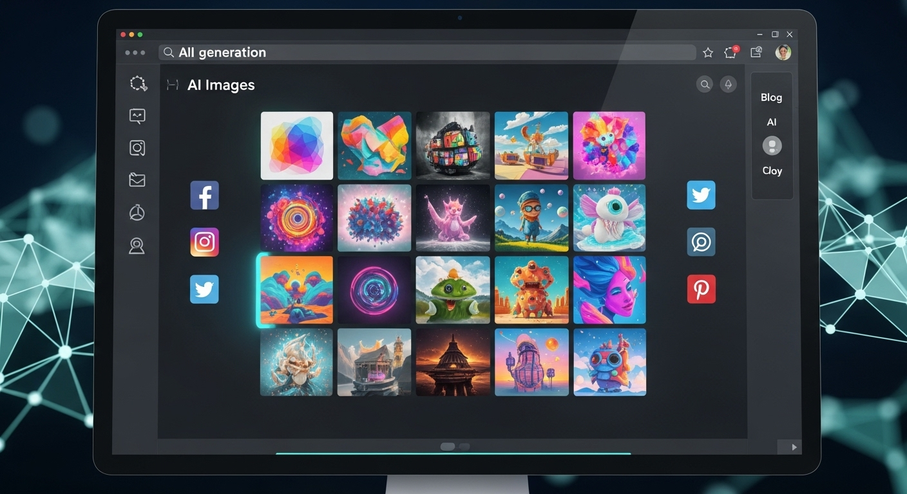
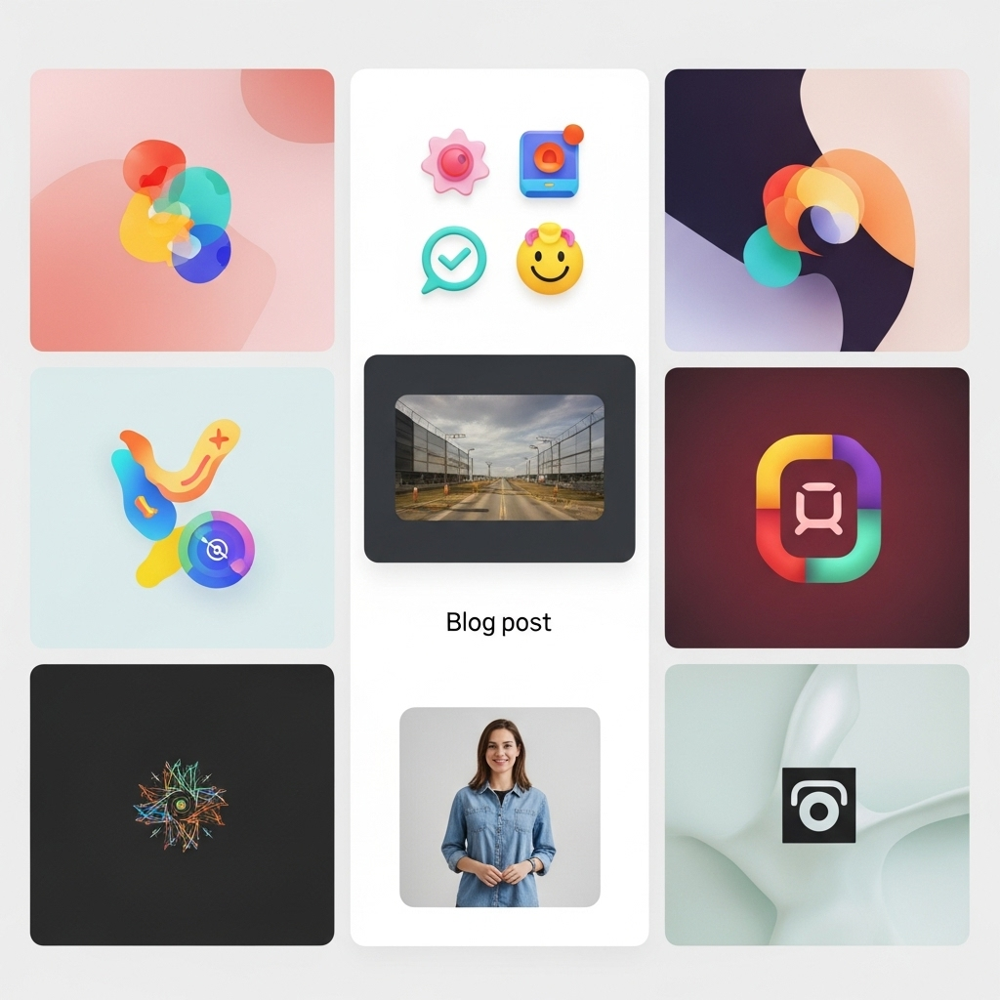
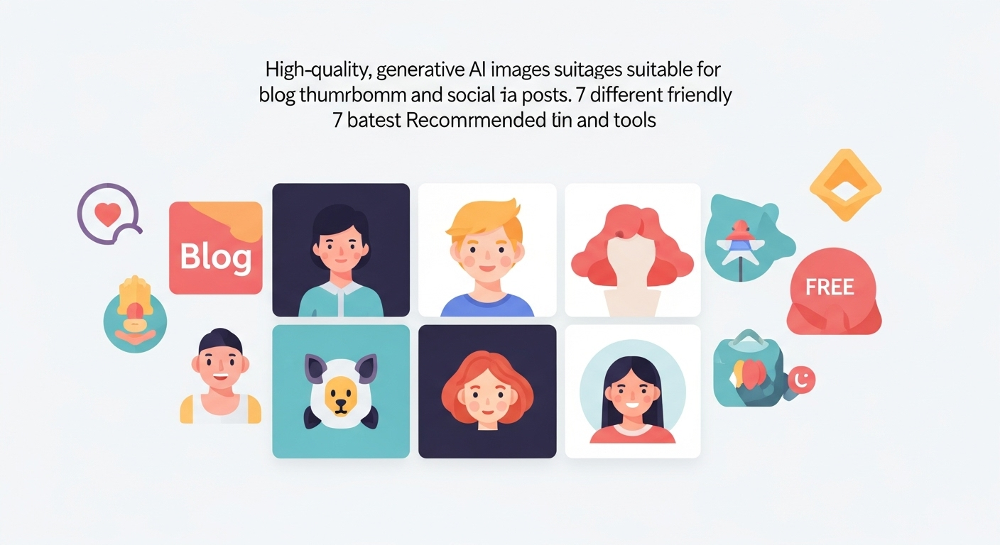
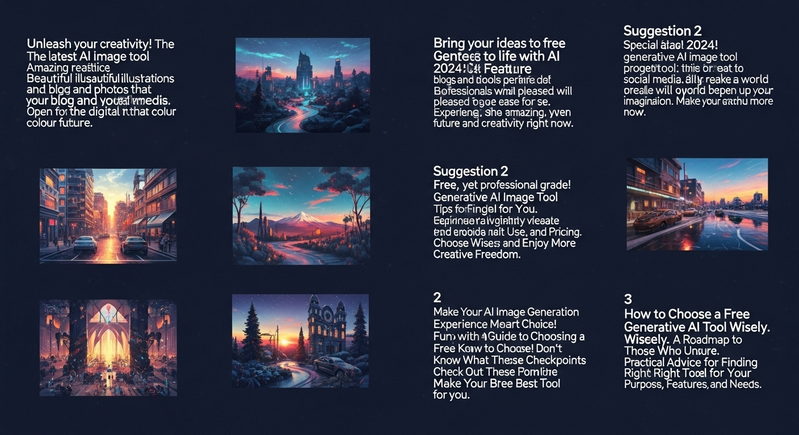
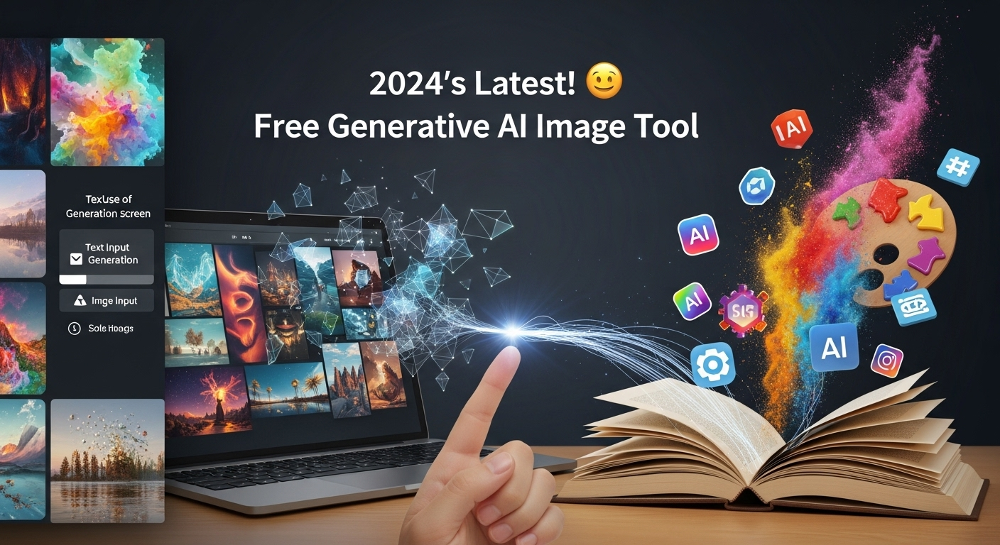
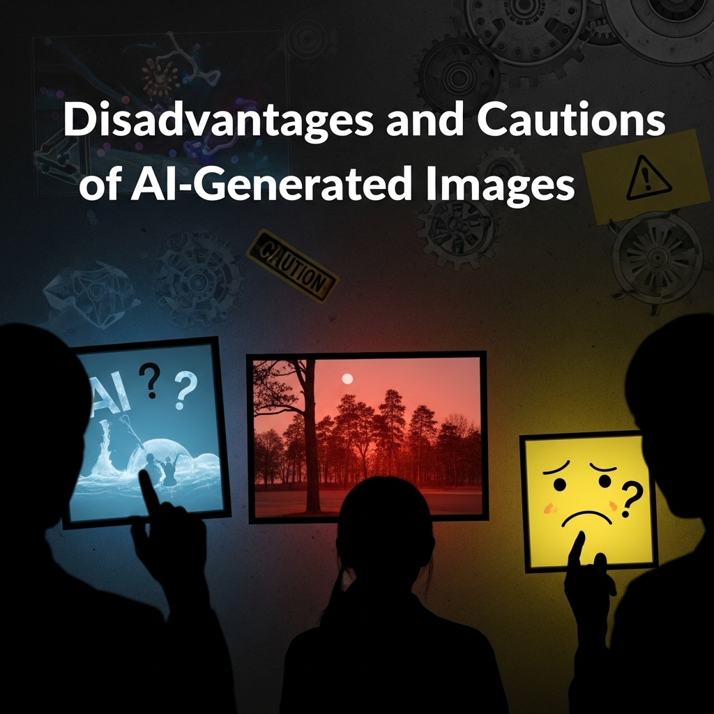

【2024年最新】ブログ・SNSに最適！無料で使えるおすすめ生成AI画像ツール

導入
ブログ記事のアイキャッチ、SNS投稿の魅力的な画像、ウェブサイトの装飾――。私たちのデジタルライフにおいて、ビジュアルコンテンツの重要性は日々増すばかりです。しかし、「自分で画像を作るのは難しい」「デザインスキルがないから無理」と感じている方もいらっしゃるのではないでしょうか。また、「プロのデザイナーに頼むのはコストがかかる」「無料素材サイトではイメージ通りのものが見つからない」といったお悩みもよく耳にします。
そんな皆様に朗報です。近年、急速な進化を遂げている「生成AI画像ツール」が、これらの課題を一挙に解決してくれる可能性を秘めています。特に、無料で利用できるツールも増えており、ブログ運営者やSNSクリエイター、個人事業主の方々にとって、まさに救世主となり得る存在です。
この記事では、2024年最新の情報を踏まえ、生成AI画像の基本的な概念から、ブログやSNSでどのように活用できるのか、そして何より「無料で使えるおすすめツール」を厳選してご紹介します。さらに、ツールの選び方、効果的な使い方、メリット・デメリット、そして著作権に関する注意点まで、生成AI画像を賢く活用するためのすべてを網羅的に解説いたします。
デザイン経験がなくても、時間やコストをかけずに、あなたの想像力を形にする。そんな夢のような体験を、ぜひこの記事を通じて始めてみませんか。落ち着いたトーンで、一つひとつ丁寧に、そして親しみやすい言葉でお伝えしていきますので、どうぞご安心ください。さあ、一緒に生成AI画像の無限の可能性を探っていきましょう。
生成AI画像とは？ブログ・SNSでの活用法

デジタルコンテンツが溢れる現代において、テキスト情報だけでなく、視覚に訴えかける画像は、読者やフォロワーの心をつかむ上で不可欠な要素となっています。特にブログやSNSでは、魅力的な画像があるかないかで、コンテンツの注目度やエンゲージメントが大きく変わると言っても過言ではありません。ここでは、そんなビジュアルコンテンツの未来を切り拓く「生成AI画像」について、その本質と、ブログ・SNSでの具体的な活用法を深掘りしていきます。
生成AI画像が注目される背景
生成AI画像とは、人工知能（AI）がテキストの指示（プロンプト）や既存の画像データに基づいて、全く新しい画像を自動的に生成する技術のことです。まるで魔法のように、私たちの言葉が瞬時に美しいビジュアルへと変換されるこの技術は、なぜこれほどまでに注目を集めているのでしょうか。その背景には、いくつかの重要な要因があります。
まず、AI技術の飛躍的な進化が挙げられます。特に「Generative Adversarial Networks（GANs）」や「Diffusion Models」といった深層学習のモデルが開発され、AIが人間が描いたと見間違うほどの高品質な画像を生成できるようになりました。以前は専門的な知識や高度な計算資源が必要でしたが、今ではクラウドベースのサービスやシンプルなインターフェースを通じて、誰でも手軽に利用できる環境が整っています。
次に、ビジュアルコンテンツの需要の爆発的な増加があります。インターネットの普及とともに、ブログ、Instagram、X（旧Twitter）、Facebook、TikTokなどのSNSプラットフォームが日常に深く浸透しました。これらのプラットフォームでは、テキストだけでは伝えきれない情報や感情を、画像や動画といったビジュアルで表現することが求められます。企業も個人も、より魅力的で目を引くビジュアルコンテンツを継続的に提供する必要に迫られており、その作成効率化へのニーズが高まっています。
さらに、画像作成の障壁が著しく低下したことも大きな要因です。従来、高品質な画像を制作するには、専門的なデザインスキルや高価なソフトウェア、あるいはプロのデザイナーへの依頼が必要でした。しかし、生成AI画像ツールが登場したことで、これらの障壁が一気に取り払われました。テキストで指示するだけで、デザイン経験のない方でも、プロフェッショナルなクオリティの画像を短時間で生成できるようになったのです。これにより、時間やコストの制約からビジュアルコンテンツの充実を諦めていた人々にとって、新たな可能性が開かれました。
また、パーソナライゼーションと多様性の追求という現代のトレンドも、生成AI画像の注目度を高めています。既成の素材集ではなかなか見つからないような、特定のテーマやニッチなニーズに合わせた画像を、AIは無限に生み出すことができます。これにより、より個性的で、ターゲット層に深く響くビジュアルコンテンツを提供することが可能になりました。
これらの背景から、生成AI画像は単なる技術的なトレンドに留まらず、私たちのコンテンツ作成の方法論そのものを変革する、強力なツールとして広く認識されるようになっています。
ブログやSNSでの具体的な活用例
生成AI画像の持つ無限の可能性は、ブログやSNSの世界でどのように花開くのでしょうか。ここでは、その具体的な活用例をいくつかご紹介し、皆様のクリエイティブな活動を後押しするヒントを提供いたします。
1. ブログ記事のアイキャッチ画像
ブログ記事の「顔」とも言えるアイキャッチ画像は、読者が記事をクリックするかどうかを決定する重要な要素です。生成AIを使えば、記事の内容に完全に合致した、オリジナリティ溢れるアイキャッチを瞬時に作成できます。例えば、「未来的な都市の風景と笑顔のビジネスパーソン」といった具体的なイメージも、プロンプト一つで生成可能です。ストックフォトサイトで探し回る手間や、既存の画像と他者の記事が被ってしまう心配もありません。
2. 記事内の挿絵や図解
長文の記事では、途中に画像を挟むことで読者の集中力を維持し、内容の理解を助けることができます。生成AIは、抽象的な概念や具体的な事例を視覚的に表現する挿絵、あるいはデータに基づいたシンプルな図解なども生成できます。例えば、「ブログ運営の成功曲線」や「AIの進化を示すタイムライン」といったイメージも、テキストで指示するだけで表現可能です。これにより、記事全体の視覚的な魅力を高め、読者の滞在時間を延ばす効果が期待できます。
3. SNS投稿のメイン画像
InstagramやFacebook、X（旧Twitter）など、SNSでは画像が投稿の「いいね」や「シェア」に直結します。生成AIを使えば、季節のイベントに合わせた画像、新商品のコンセプトビジュアル、フォロワーへの問いかけを促す魅力的な背景画像など、多様な投稿シーンに合わせた画像をスピーディーに作成できます。ターゲット層の興味を引くような、パーソナライズされたビジュアルで、エンゲージメントを高めましょう。
4. 広告バナーやキャンペーン画像
オンライン広告やSNSでのキャンペーンでは、視覚的なインパクトが非常に重要です。生成AIは、特定の製品やサービスの魅力が伝わるような、目を引く広告バナーやキャンペーン画像を効率的に作成するのに役立ちます。複数のデザイン案を短時間で生成し、A/Bテストで最も効果的なものを選ぶといった運用も容易になります。
5. プロフィール画像やヘッダー画像
ブログやSNSのアカウントの「顔」となるプロフィール画像やヘッダー画像も、生成AIでオリジナリティ溢れるものを作成できます。例えば、「自分のキャラクターをイラスト風に描いたもの」や「ブログのテーマを象徴する抽象画」など、個性を際立たせるビジュアルで、訪問者に強い印象を与えることができます。
6. プレゼンテーション資料の素材
ビジネスシーンでのプレゼンテーションにおいても、生成AI画像は強力な味方となります。スライドの背景画像、説明を補足するイラスト、概念図など、資料の視覚的な魅力を高め、聴衆の理解を深めるための素材を簡単に作成できます。
7. コンセプトアートやアイデア出し
まだ具体的な形になっていないアイデアやコンセプトを視覚化する際にも、生成AIは非常に有効です。例えば、新しい商品のデザインイメージ、イベントの空間デザイン、物語の登場人物のビジュアルなど、言葉だけでは伝えきれないイメージを瞬時に形にすることで、チーム内のコミュニケーションを円滑にし、クリエイティブな発想を加速させることができます。
このように、生成AI画像は、ブログやSNS運営における様々なシーンで、私たちのクリエイティブな活動を強力にサポートしてくれます。デザインの専門知識がなくても、あなたのアイデアを魅力的なビジュアルとして表現できるこの技術を、ぜひ日々のコンテンツ作成に取り入れてみてください。きっと、あなたの発信する情報が、より多くの人々に届き、心に響くようになるはずです。
【無料】ブログ・SNS向け生成AI画像ツール7選

生成AI画像の無限の可能性を感じていただけたでしょうか。しかし、数多くのツールの中から、どれを選べば良いのか迷ってしまうかもしれません。そこでこのセクションでは、ブログやSNSでの活用に特に適しており、かつ無料で利用できるおすすめの生成AI画像ツールを厳選して7つご紹介いたします。それぞれのツールの特徴やできることを詳しく解説しますので、ご自身の目的やスキルレベルに合わせて、最適なツールを見つける手助けになれば幸いです。
ツール１．Canva Magic Mediaの主な特徴とできること
Canva（キャンバ）は、プロ並みのデザインを誰でも簡単に作成できるオンラインデザインツールとして、すでに多くのブロガーやSNSユーザーに愛用されています。そのCanvaが提供する生成AI画像機能が「Magic Media（マジックメディア）」です。Canvaユーザーにとっては、既存のワークフローにAI画像生成をシームレスに組み込めるため、非常に強力な選択肢となります。
主な特徴
- Canvaとのシームレスな連携: Canvaのデザインエディター内で直接Magic Mediaを利用できるため、AIで生成した画像をすぐにデザインに組み込むことができます。別ツールで生成してダウンロードし、Canvaにアップロードする手間がありません。
- 直感的な操作性: Canvaのユーザーフレンドリーなインターフェースを踏襲しており、AI画像生成が初めての方でも迷うことなく操作できます。テキストプロンプトを入力するだけで、簡単に画像を生成可能です。
- 多様なスタイルオプション: 写実的な写真、水彩画、油絵、アニメ、3D、コンセプトアートなど、幅広いアートスタイルを選択できます。これにより、ブログやSNSのコンテンツに合わせた多様なビジュアルを生成することが可能です。
- 日本語プロンプト対応: 日本語でのプロンプト入力にもしっかりと対応しているため、英語が苦手な方でも安心して利用できます。
- 無料枠での利用: Canvaの無料プランでも、一定回数のMagic Mediaの利用が可能です。有料プランに加入すれば、さらに多くのクレジットが付与され、より頻繁に利用できるようになります。
できること
- ブログのアイキャッチ画像作成: 記事の内容に合わせたオリジナルアイキャッチを、Canvaのテンプレートと組み合わせて素早く作成できます。例えば、「カフェでくつろぐ猫」のような具体的なシーンも、プロンプト一つで思いのままです。
- SNS投稿用の画像生成: Instagramの投稿、Facebookのカバー写真、Xのヘッダーなど、様々なSNSプラットフォームに合わせたサイズの画像を、Canvaのデザインテンプレートと連携させて効率的に作成できます。
- デザイン素材としての活用: 生成した画像を、Canva内の他のデザイン要素（テキスト、図形、アイコンなど）と組み合わせて、より複雑で魅力的なビジュアルコンテンツを作り上げることができます。
- 既存デザインの強化: 既に作成中のCanvaデザインに、AIで生成したユニークなイラストや背景画像を追加することで、デザインをさらに魅力的にアップグレードできます。
Canva Magic Mediaは、普段からCanvaを利用している方、またはデザイン初心者でAI画像生成も試してみたいという方にとって、非常に優れた選択肢と言えるでしょう。使い慣れた環境で、手軽に高品質なAI画像を生成し、あなたのブログやSNSコンテンツを彩ってみてください。
ツール２．Bing Image Creator (Microsoft Copilot)の主な特徴とできること
Bing Image Creatorは、Microsoftが提供する画像生成AIツールであり、DALL-E 3という非常に高性能なAIモデルを基盤としています。現在では、Microsoft Copilot（旧Bing Chat）の一部として統合されており、チャット形式でAIと対話しながら画像を生成できる点が大きな特徴です。Microsoftアカウントがあれば誰でも無料で利用でき、そのクオリティの高さから多くのユーザーに支持されています。
主な特徴
- DALL-E 3の搭載: OpenAIが開発した最先端のDALL-E 3モデルを採用しているため、非常に高品質で詳細な画像を生成できます。テキストプロンプトの解釈能力も高く、より意図に近い画像を生成しやすいのが強みです。
- Microsoft Copilotとの連携: Copilotのチャットインターフェースを通じて画像生成が可能です。自然言語でAIと対話し、生成したい画像を具体的に指示できるため、初心者でも直感的に操作できます。
- 無料かつクレジット制: Microsoftアカウントでログインすれば、毎日一定数の「ブースト」クレジットが付与され、高速で画像を生成できます。クレジットを使い切っても、生成速度は落ちるものの引き続き無料で利用可能です。
- 日本語プロンプトの理解度が高い: 日本語での指示に対する理解度も非常に高く、複雑なニュアンスや具体的な描写も正確に反映してくれる傾向があります。
- 商用利用の可能性: 基本的に生成された画像は、Microsoftの利用規約に従い、商用利用も可能です。ただし、常に最新の規約を確認することが重要です。
できること
- 高精度なブログアイキャッチの生成: 記事のテーマに合わせた、写実的あるいはイラスト調の高品質なアイキャッチ画像を、細部までこだわって生成できます。例えば、「夕焼け空の下、読書する女性のシルエット、サイバーパンク風」といった複雑な指示も可能です。
- SNS投稿用コンテンツの作成: InstagramやX、Facebookなどで目を引く、ユニークな投稿画像を簡単に作れます。DALL-E 3の表現力の高さにより、他とは一線を画すビジュアルコンテンツを生み出すことが可能です。
- 特定のテーマやスタイルの画像生成: 「〇〇風のイラスト」「〇〇の雰囲気を持つ写真」といった、具体的なテーマやアートスタイルを指定して画像を生成できます。これにより、ブログやSNSのブランドイメージに合った画像を統一感を持って作成できます。
- アイデア出しやコンセプトビジュアル: 新しいプロジェクトやコンテンツのアイデアを視覚化する際に、Bing Image Creatorは強力なツールとなります。複数のバリエーションを素早く生成し、イメージを具体化する手助けをしてくれます。
- テキストを画像に埋め込む機能: DALL-E 3は、プロンプトに含まれるテキストを画像内に自然に描画する能力も持っています。これにより、キャッチフレーズ入りのバナーやロゴのモックアップなども作成可能です。（ただし、完璧な精度ではない場合もあります。）
Bing Image Creatorは、その生成される画像のクオリティの高さと、Microsoft Copilotを通じて自然な会話で画像を生成できる手軽さから、多くのユーザーにおすすめできるツールです。特に、緻密な描写や独特の雰囲気を持つ画像を求めている方には、ぜひ一度試していただきたいツールです。
ツール３．Stable Diffusion Online / Playground AIの主な特徴とできること
Stable Diffusionは、オープンソースで公開されている強力な画像生成AIモデルです。このモデルを基盤とした無料のWebサービスが多数存在しますが、ここでは代表的なものとして「Stable Diffusion Online」や、より高機能な「Playground AI」を例に挙げてご紹介します。これらのツールは、AI画像生成の可能性を深く探求したいユーザーや、より細かな制御を求めるユーザーにとって魅力的な選択肢となります。
Stable Diffusion Online / Playground AIの主な特徴
- オープンソースモデルの活用: Stable Diffusionはオープンソースであるため、日々多くの開発者やアーティストによって改良が加えられ、多様なモデルや機能が提供されています。Webサービスはその恩恵を受け、常に進化しています。
- 高いカスタマイズ性（Playground AIなど）: Playground AIのようなサービスでは、単にプロンプトを入力するだけでなく、生成画像のサイズ、アスペクト比、スタイル、シード値、ステップ数、CFGスケールなど、様々なパラメータを細かく調整できます。これにより、より意図に近い画像を生成するための制御が可能です。
- 多様なアートスタイル: 写実的な写真から、アニメ、漫画、水彩画、油絵、SFアート、ファンタジーアートなど、非常に幅広いアートスタイルに対応しています。特定のアーティストのスタイルを模倣するような画像も生成できる場合があります。
- 無料枠の充実: Stable Diffusion Onlineは基本的に無制限に無料で利用できる場合が多く、Playground AIも毎日一定数の画像を無料で生成できるクレジットが付与されます。
- 画像編集機能（Playground AIなど）: Playground AIでは、生成した画像を基に、一部を修正したり、画像を拡張したりする機能（Inpainting/Outpainting）も利用できます。
できること
- ユニークなブログアイキャッチの作成: 他の人とは被らない、非常に個性的で魅力的なアイキャッチ画像を生成できます。プロンプトとパラメータを工夫することで、特定のテーマや雰囲気を完璧に表現することが可能です。
- SNS投稿のビジュアル強化: Instagramのフィードを彩る美しい写真、Xで目を引くイラスト、Facebookのカバー画像など、SNSの多様なニーズに応えるビジュアルコンテンツを生成できます。
- コンセプトアートの生成: 新しいキャラクターデザイン、ゲームの世界観、プロダクトのイメージなど、アイデアを視覚化するためのコンセプトアートやムードボードの作成に非常に役立ちます。
- 画像編集とバリエーション生成: 生成された画像を基に、Inpaintingで不要な要素を削除したり、Outpaintingで背景を拡張したりすることで、さらに理想に近い画像を作り上げることができます。また、同じプロンプトでもパラメータを変えることで、無限のバリエーションを生み出すことが可能です。
- 特定のアーティストや画風の模倣: プロンプトに特定のアーティスト名や画風を指定することで、そのスタイルに似た画像を生成する試みもできます（ただし、著作権には十分な注意が必要です）。
Stable Diffusion OnlineやPlayground AIは、AI画像生成の奥深さを体験したい方、よりクリエイティブな表現を追求したい方におすすめです。最初はパラメータの調整に戸惑うかもしれませんが、試行錯誤を繰り返すことで、あなたの想像力をはるかに超えるような素晴らしい画像を生成できるようになるでしょう。
ツール４．Leonardo.Aiの主な特徴とできること
Leonardo.Aiは、Stable Diffusionを基盤としながらも、ユーザーインターフェースや機能面で独自の進化を遂げた画像生成AIツールです。特に、ゲームアセットやコンセプトアートの生成に強みを持つとされており、その高いクオリティと多様なモデル選択肢が特徴です。無料枠でも毎日多くの画像を生成できるため、本格的にAI画像生成に取り組みたいユーザーにとって、非常に魅力的な選択肢となります。
主な特徴
- 豊富なAIモデル: Stable Diffusionのカスタムモデルが多数用意されており、リアルな写真、ファンタジーアート、アニメ、SF、油絵など、多様なスタイルに特化したモデルを選んで画像を生成できます。これにより、特定のジャンルに特化した高品質な画像を効率的に生成可能です。
- 直感的なUIと詳細な設定: 初心者でも使いやすい直感的なインターフェースを提供しつつ、上級者向けにはプロンプトの重み付け、ネガティブプロンプト、画像サイズ、アスペクト比、シード値、スケールなど、詳細な設定項目が充実しています。
- 画像編集機能の充実: 生成した画像を部分的に修正する「Inpainting」、画像を拡張する「Outpainting」、既存の画像をAIで変換する「Image to Image」など、画像編集機能も豊富に備わっています。
- コミュニティ機能: 他のユーザーが生成した画像や使用したプロンプトを閲覧できるギャラリー機能があり、インスピレーションを得たり、プロンプトの学習に役立てたりすることができます。
- 無料クレジットの提供: 毎日一定量のクレジットが無料で付与され、その範囲内で画像を生成できます。無料枠でも十分な枚数を生成できるため、様々なアイデアを試すことが可能です。
できること
- 高品質なブログアイキャッチと挿絵: 記事の内容に合わせた、非常にクオリティの高いアイキャッチ画像や、記事の理解を助ける挿絵を生成できます。特に、ファンタジーやSF、アート系のテーマのブログには最適です。
- SNSのビジュアルコンテンツ強化: InstagramやXなどのSNSで目を引く、プロフェッショナルなレベルの画像を生成できます。豊富なモデルの中から、アカウントのテイストに合ったスタイルを選び、一貫性のあるビジュアルを提供できます。
- キャラクターデザインやコンセプトアート: 特定のキャラクター設定に基づいたビジュアル、ゲームや物語の世界観を表現するコンセプトアートの生成に非常に強力です。クリエイターのアイデア出しやプレビジュアライゼーションを加速させます。
- 既存画像のバリエーション作成: 自分の写真やイラストをアップロードし、Leonardo.AiのAIモデルを使って異なるスタイルに変換したり、複数のバリエーションを生成したりすることができます。
- プロンプトエンジニアリングの学習: コミュニティギャラリーで公開されているプロンプトを参考に、高品質な画像を生成するためのプロンプトの書き方を学ぶことができます。
Leonardo.Aiは、その高い画像生成能力と、多様な機能、そして充実した無料枠により、AI画像生成に本格的に取り組みたい方、特にビジュアルのクオリティを重視する方におすすめのツールです。あなたのクリエイティブなアイデアを、より洗練されたビジュアルとして具現化する手助けをしてくれるでしょう。
ツール５．SeaArt.AIの主な特徴とできること
SeaArt.AIは、アジア圏を中心に急速に人気を集めている画像生成AIプラットフォームです。Stable Diffusionを基盤としつつ、ユーザーが作成した多様なカスタムモデル（LoRAなど）が豊富に共有されている点が最大の特徴です。これにより、非常に幅広い表現が可能となり、特にアニメ調やイラスト調の画像生成において高い能力を発揮します。無料枠も充実しており、多くのユーザーが気軽に高品質な画像を生成できる環境を提供しています。
主な特徴
- 豊富なカスタムモデルとLoRA: ユーザーコミュニティによって作成・共有された、数多くのカスタムモデルやLoRA（Low-Rank Adaptation）が利用可能です。これにより、特定のキャラクター、画風、シチュエーションなど、非常にニッチで具体的な画像を生成できます。
- アニメ・イラスト系の生成に強み: 特にアニメや漫画、イラスト調の画像生成において高いクオリティと多様な表現力を持ちます。日本のサブカルチャーに特化したモデルも多く見られます。
- 強力な編集機能: プロンプトによる生成だけでなく、Inpainting（部分修正）、Outpainting（画像拡張）、Image to Image（画像からの画像生成）など、高度な画像編集機能も充実しています。
- 活発なコミュニティとギャラリー: 他のユーザーが生成した画像やプロンプトを閲覧できるギャラリーがあり、インスピレーションを得たり、プロンプトの書き方を学んだりするのに非常に役立ちます。また、コンテストなども頻繁に開催されています。
- 無料クレジットシステム: 毎日ログインボーナスやタスク達成でクレジットが付与され、その範囲内で画像を生成できます。無料枠でも比較的多くの画像を生成できるため、様々なモデルやプロンプトを試すことが可能です。
- 日本語対応: インターフェースやプロンプト入力において日本語に対応しており、英語が苦手な方でも安心して利用できます。
できること
- アニメ・イラスト調のブログアイキャッチ: アニメや漫画、イラストに特化したブログやSNSアカウントを運営している方にとって、テーマに完全に合致したオリジナルアイキャッチや挿絵を生成するのに最適です。
- 魅力的なSNSキャラクターの作成: 自分のSNSアカウントのアイコンとなるようなオリジナルキャラクターを、様々なポーズや表情で生成できます。一貫性のあるビジュアルでブランドイメージを構築できます。
- ファンアートや二次創作: 特定のアニメやゲームのキャラクターに似た画像を生成する（ただし、著作権には十分配慮が必要）、あるいはオリジナルのキャラクターでファンアートを作成するといった用途にも活用できます。
- アイデア出しとビジュアルコンセプト: 新しいコンテンツのアイデアを、アニメやイラスト調で視覚化する際に強力なツールとなります。複数のバリエーションを素早く生成し、イメージを具体化できます。
- プロンプトとモデルの学習: ギャラリーで公開されている成功例や使用されているモデル、プロンプトを参考にすることで、AI画像生成のスキルを効果的に向上させることができます。
SeaArt.AIは、特にアニメやイラスト、漫画といったジャンルのビジュアルコンテンツをブログやSNSで発信している方にとって、非常に強力なパートナーとなるでしょう。多様なモデルと活発なコミュニティを活用し、あなたのクリエイティブな表現の幅を広げてみてください。
ツール６．Adobe Fireflyの主な特徴とできること
Adobe Fireflyは、クリエイティブソフトウェアの巨人であるAdobeが開発した生成AIツールです。Adobe製品との連携を前提に設計されており、特に商用利用における著作権への配慮が強調されている点が大きな特徴です。無料クレジット制で提供されており、Adobe Creative Cloudユーザーはもちろん、AI画像生成に関心のあるすべての人にとって、信頼性の高い選択肢となっています。
主な特徴
- 商用利用への配慮: Adobe Stockの高品質な画像データで学習されているため、著作権侵害のリスクが低いとされています。生成された画像は、Adobeの利用規約に従い、商用利用が可能です。この点は、ブログやSNSで収益化を目指すユーザーにとって非常に重要です。
- Adobe製品との連携: 将来的にはPhotoshopやIllustratorなどのAdobe Creative Cloud製品にFireflyの機能が統合される予定であり、既存のワークフローにAI機能をシームレスに組み込むことが期待されています。現在はWeb版で利用できます。
- 多様な生成機能: テキストから画像を生成する「テキストから画像」機能のほか、テキストで画像を部分的に編集・修正する「生成塗りつぶし」、テキストでテキストエフェクトを生成する「テキストエフェクト」、ベクター画像を生成する「テキストからベクター」など、多岐にわたる機能が提供されています。
- 直感的なUIと日本語対応: Adobe製品らしい洗練されたユーザーインターフェースは直感的で分かりやすく、初心者でも簡単に操作できます。日本語でのプロンプト入力にもしっかりと対応しています。
- スタイルや設定の調整: 生成される画像のスタイル（写真、アート、グラフィックなど）、色調、照明、構図などを細かく調整できるオプションが用意されており、より意図に近い画像を生成するための制御が可能です。
- 無料クレジットの提供: Adobeアカウントでログインすれば、毎月一定量の無料クレジットが付与され、その範囲内でFireflyの各機能を利用できます。
できること
- 信頼性の高いブログアイキャッチ: 商用利用の心配が少ないため、ブログのアイキャッチ画像として安心して利用できます。記事のテーマに合わせた高品質な画像を、多様なスタイルで生成可能です。
- SNS投稿用のオリジナル画像: 著作権を気にせず、オリジナリティ溢れるSNS投稿画像を生成できます。製品紹介、イベント告知、ブランドイメージの表現など、様々な用途で活用できます。
- 「生成塗りつぶし」による画像編集: 既存の写真やイラストに、テキストの指示で新しい要素を追加したり、不要な部分を削除したり、背景を拡張したりといった高度な画像編集が可能です。例えば、写真に写り込んだ電線を消したり、空に雲を追加したりできます。
- テキストエフェクトの作成: ブログの見出しやSNSのキャッチコピーに、AIで生成したユニークなテキストエフェクトを適用できます。金属、木材、炎、水などの質感をテキストに持たせることが可能です。
- プレゼンテーション資料の素材: 信頼性の高い画像を、プレゼンテーションのスライド背景や挿絵として利用できます。プロフェッショナルな印象を与える資料作成に役立ちます。
Adobe Fireflyは、特に商用利用を視野に入れている方、既存のAdobe製品ユーザー、そして高品質で信頼性の高いAI画像生成ツールを求めている方におすすめです。Adobeの強みであるクリエイティブなエコシステムの中で、AIの力を最大限に活用し、あなたのビジュアルコンテンツを次のレベルへと引き上げてくれるでしょう。
ツール７．Lexica Artの主な特徴とできること
Lexica Artは、Stable Diffusionをベースとした画像生成AIツールでありながら、その最大の特徴は、膨大な数のAI生成画像とそのプロンプトを検索できる「ギャラリー」機能にあります。これにより、他のユーザーがどのようなプロンプトでどのような画像を生成しているのかを参考にしながら、自分自身の画像生成スキルを向上させることができます。無料で利用でき、手軽に高品質な画像を生成できるため、初心者から上級者まで幅広いユーザーにおすすめです。
主な特徴
- 強力なプロンプト検索ギャラリー: 数千万枚に及ぶAI生成画像が公開されており、キーワードで検索することで、イメージに近い画像と、その画像を生成したプロンプト（呪文）を簡単に見つけることができます。これは、プロンプトの書き方を学ぶ上で非常に強力なリソースです。
- Stable Diffusionベースの生成: 検索機能だけでなく、Stable Diffusionモデルを使った画像生成機能も提供されています。ギャラリーで参考にしたプロンプトをそのまま利用したり、自分なりにアレンジして画像を生成したりできます。
- シンプルなインターフェース: 画像生成画面は非常にシンプルで分かりやすく、プロンプトを入力し、いくつかのオプションを選択するだけで画像を生成できます。複雑な設定が苦手な初心者の方でも安心して利用できます。
- 高速な画像生成: 比較的短時間で画像を生成してくれるため、複数のプロンプトを試したり、バリエーションを生成したりする際にストレスを感じにくいです。
- 無料利用枠: ログインなしでもギャラリーを閲覧でき、ログインすれば毎日一定数の画像を無料で生成できます。
できること
- プロンプトのアイデア出しと学習: 「こんな画像を作りたいけれど、どうプロンプトを書けばいいかわからない」というときに、Lexica Artのギャラリーで似た画像を検索し、そのプロンプトを参考にすることができます。これはAI画像生成のスキルアップに非常に有効です。
- ブログアイキャッチの効率的な作成: 記事のテーマに合う画像を検索し、気に入ったプロンプトを少し修正するだけで、高品質なアイキャッチ画像を効率的に作成できます。
- SNS投稿のインスピレーション: SNSで目を引くビジュアルのアイデアが欲しいときに、ギャラリーを眺めるだけで多くのインスピレーションを得られます。具体的なプロンプト例があるため、すぐに自分の投稿に活かすことができます。
- 多様なスタイルの画像生成: ギャラリーには写実的な写真からイラスト、アートなど、様々なスタイルの画像が投稿されているため、自分のコンテンツに合ったスタイルを見つけ、それを再現するプロンプトを学ぶことができます。
- キャラクターやコンセプトの探索: 特定のキャラクターイメージや世界観を具現化したいときに、関連するキーワードで検索し、様々な表現方法やプロンプトのパターンを発見できます。
Lexica Artは、AI画像生成のプロンプト作成に慣れていない初心者の方や、常に新しいアイデアやインスピレーションを求めているクリエイターの方に特におすすめです。他のユーザーの知見を借りながら、効率的に高品質な画像を生成し、あなたのブログやSNSコンテンツをさらに魅力的に彩ってみてください。
無料生成AI画像ツールの選び方

数多くの無料生成AI画像ツールが登場する中で、「結局、どれを選べばいいの？」と迷ってしまうのは当然のことです。それぞれのツールには独自の強みや特徴があり、あなたの目的や使い方によって最適な選択肢は異なります。ここでは、無料生成AI画像ツールを選ぶ際に注目すべき4つのポイントを、落ち着いたトーンで丁寧に解説していきます。ご自身のニーズと照らし合わせながら、最適なツールを見つけるための参考にしてください。
選び方１．用途に合った機能があるか
生成AI画像ツールを選ぶ上で最も基本的なことの一つが、「あなたがそのツールで何をしたいのか」を明確にすることです。ツールによって得意なことや提供している機能が大きく異なるため、まずはご自身の用途を具体的にイメージしてみましょう。
例えば、ブログのアイキャッチやSNSの投稿画像を作成したい場合、主に「テキストから画像を生成する機能（Text-to-Image）」が中心となるでしょう。この機能の精度や、生成できる画像のスタイル（写実的、イラスト風、アニメ調など）が、あなたのコンテンツのテイストに合っているかどうかが重要です。
もし、既存の画像を元に新しい画像を生成したい、あるいは生成した画像の一部を修正・拡張したいと考えているなら、「画像から画像を生成する機能（Image-to-Image）」や「部分修正機能（Inpainting）」「画像拡張機能（Outpainting）」などが充実しているツールを選ぶ必要があります。例えば、Canva Magic MediaはCanvaのデザインツール内でシームレスに画像を生成・編集できるため、既存のデザインにAI画像を組み込みたい場合に非常に便利です。また、Adobe Fireflyの「生成塗りつぶし」は、既存画像の部分的な修正や要素の追加に非常に強力です。
さらに、特定のジャンルに特化した画像を求めている場合もあります。例えば、アニメや漫画風のイラストを頻繁に使うのであれば、SeaArt.AIのように多様なカスタムモデルやLoRAが利用でき、アニメ調の生成に強いツールが適しています。一方、リアルな写真のような画像を求めるなら、DALL-E 3を基盤とするBing Image Creatorなどが高いクオリティを発揮します。
このように、単に「画像が作れる」だけでなく、「どのような画像を、どのように作りたいのか」という具体的な用途に合った機能が提供されているかを確認することが、ツール選びの第一歩となります。ご自身のクリエイティブなニーズを満たしてくれる機能が揃っているか、じっくりと吟味してみてください。
選び方２．生成できる画像のクオリティ
生成AI画像ツールの性能を測る上で、最も気になるのが「生成される画像のクオリティ」ではないでしょうか。せっかく時間をかけてプロンプトを入力しても、最終的な画像が期待外れでは意味がありません。画像のクオリティは、ツールの基盤となるAIモデルや、そのモデルが学習したデータの質によって大きく左右されます。
一口に「クオリティ」と言っても、その評価軸は多岐にわたります。
- 写実性（リアリズム）: 人物、風景、物体などがまるで写真のようにリアルに描写されているか。肌の質感、光の当たり方、影の表現など、細部の再現度が高いかどうかがポイントです。Bing Image CreatorやLeonardo.Aiの一部モデルは、この点で高い評価を受けています。
- イラスト・アート性: 特定の画風（水彩画、油絵、アニメ、漫画など）が忠実に再現されているか。線の滑らかさ、色彩の豊かさ、独特のタッチなどが表現できているかが重要です。Canva Magic MediaやSeaArt.AIは、多様なアートスタイルに対応しています。
- 一貫性: 同じプロンプトやテーマで複数の画像を生成した際に、キャラクターやオブジェクトのスタイル、雰囲気などに一貫性があるか。シリーズもののブログ記事やSNS投稿で統一感を出すためには、この一貫性が非常に重要になります。
- 細部の破綻の少なさ: AI生成画像では、時に不自然な手足の指の数、意味不明な文字、奇妙なオブジェクトの配置など、細部に破綻が見られることがあります。クオリティの高いツールほど、このような破綻が少なく、自然な画像を生成する傾向があります。
- 解像度と出力オプション: 生成される画像の解像度や、ダウンロードできるファイル形式（JPG, PNGなど）も確認しておきましょう。ブログやSNSで高画質な画像を使いたい場合、ある程度の解像度が出力できるツールを選ぶことが大切です。
実際にツールを選ぶ際には、各ツールの公式サイトや、他のユーザーが公開している生成例（特にLexica Artのようなギャラリーサイト）を参考に、どのようなクオリティの画像が生成できるのかを事前に確認することをおすすめします。可能であれば、いくつかのツールで同じプロンプトを試してみて、比較検討するのも良いでしょう。あなたのコンテンツが求めるビジュアルレベルに到達できるツールを見つけることが、成功への鍵となります。
選び方３．操作のしやすさと日本語対応
どんなに高性能なツールでも、使いこなせなければ意味がありません。特にAI画像生成が初めての方や、デザインツールに不慣れな方にとっては、「操作のしやすさ」と「日本語対応」がツール選びの重要なポイントとなります。
操作のしやすさ（UI/UX）
ツールの操作性は、大きく以下の点に注目して評価できます。
- 直感的なインターフェース: ボタンの配置、メニューの構成、情報の表示方法などが分かりやすく、迷わずに操作できるかどうかが重要です。Canva Magic MediaやBing Image Creatorのように、シンプルで直感的なUIを持つツールは、初心者にとって非常に使いやすいでしょう。
- プロンプト入力のサポート: プロンプト（指示文）の入力方法が分かりやすいか、あるいはプロンプトのヒントや例が提供されているかなどもチェックポイントです。複雑なプロンプトを記述する際に、補助機能があると作業効率が格段に上がります。
- パラメータ調整の容易さ: 画像のスタイル、アスペクト比、解像度などのパラメータを調整する際に、スライダーやドロップダウンメニューなどで直感的に変更できるかどうかも重要です。細かすぎる設定項目が羅列されていると、かえって混乱を招くことがあります。
- 生成までのステップ数: プロンプトを入力してから画像が生成されるまでのステップが少ないほど、手軽に利用できます。特に、短時間で多くのバリエーションを試したい場合には、この点が重要になります。
- 学習コスト: 新しいツールを使い始める際に、チュートリアルやヘルプドキュメントが充実しているか、コミュニティで情報交換ができるかなども、学習コストを判断する上で役立ちます。
日本語対応
多くの生成AI画像ツールは海外発のため、インターフェースやヘルプが英語のみの場合もあります。しかし、最近では日本語にしっかりと対応しているツールが増えてきました。
- インターフェースの日本語化: メニュー、ボタン、説明文などが日本語で表示されているか。これにより、ツールの機能をより深く理解し、スムーズに操作できます。
- 日本語プロンプトの理解度: 最も重要なのは、日本語で入力したプロンプトをAIがどれだけ正確に理解し、意図通りの画像を生成できるかという点です。Bing Image CreatorやCanva Magic Media、Adobe Fireflyなどは、日本語プロンプトの理解度が高いと評価されています。英語でのプロンプト作成に抵抗がある方にとっては、この点は非常に大きなメリットとなります。
もしあなたが英語に抵抗がない、あるいはプロンプトの翻訳ツールを積極的に利用する意向があるのであれば、日本語対応の優先順位は下がるかもしれません。しかし、多くの日本人ユーザーにとって、ストレスなくツールを使いこなすためには、操作のしやすさと日本語対応は非常に重要な要素となるでしょう。まずは気になるツールの無料版を実際に触ってみて、ご自身にとっての使いやすさを体感してみることをおすすめします。
選び方４．商用利用・著作権の許諾範囲
生成AI画像ツールを利用する上で、最も慎重に確認すべきであり、かつ最も複雑な問題の一つが「商用利用の可否」と「著作権の許諾範囲」です。ブログやSNSで収益化を目指している方、あるいは企業アカウントで利用を考えている方は、この点を曖昧なままにしておくと、将来的に予期せぬトラブルに巻き込まれる可能性があります。
商用利用の可否
多くの無料生成AI画像ツールは、個人利用の範囲であれば自由に画像を生成・公開することを許可しています。しかし、その画像をブログの広告収益、アフィリエイト、商品販売、あるいは企業のプロモーション活動などに使用する場合、それは「商用利用」とみなされます。
- 各ツールの利用規約を確認する: 最も重要なのは、利用を検討している各ツールの「利用規約（Terms of Service）」または「FAQ（よくある質問）」を熟読することです。商用利用に関する明確な記載があるはずです。
- 無料枠と有料プランの違い: 無料枠では商用利用が制限されているが、有料プランにアップグレードすれば商用利用が可能になるケースもあります。
- クレジット表記の必要性: 商用利用の際に、ツールの提供元やAIモデルの名前をクレジットとして表記する必要があるかどうかも確認しましょう。
著作権の許諾範囲と帰属
生成AIによって作られた画像の著作権が誰に帰属するのか、という問題は、現在世界中で議論されており、法整備が追いついていないのが現状です。しかし、ツールの利用規約には、生成された画像の著作権に関するスタンスが明記されていることが多いです。
- 生成画像の著作権帰属:
- 生成したユーザーに帰属するケース: ユーザーが生成した画像の著作権はユーザーに帰属するとするツールもあります。この場合、ユーザーは生成画像を自由に利用・改変・配布できます。
- ツールの提供元に帰属するケース: 生成画像の著作権はツールの提供元に帰属し、ユーザーは特定のライセンスに基づいて利用を許可されるというケースもあります。
- 著作権が発生しない、あるいは不明確なケース: AIが生成した画像には著作権が発生しない、あるいは著作権の帰属が不明確であるとする見解もあります。
- 学習データの著作権: AIが画像を生成する際、インターネット上の膨大な画像データ（既存の著作物を含む）を学習しています。この学習プロセスが著作権侵害にあたるかどうかについても、様々な議論があります。Adobe Fireflyのように、著作権クリアなAdobe Stockのデータで学習していることを明示しているツールは、この点での安心感が高いと言えます。
- 他者の著作物との類似性: 生成された画像が、既存の特定の作品に酷似している場合、著作権侵害とみなされるリスクがあります。意図せず既存の作品と似た画像が生成されてしまう可能性もゼロではありません。
注意点
- 自己責任の原則: 多くのツールでは、生成AI画像の利用における著作権に関する責任は、最終的にユーザー自身が負うことになると明記されています。
- 最新情報の確認: 著作権に関する法的な解釈やツールの利用規約は、今後も変更される可能性があります。利用する際は、常に最新の情報を確認する習慣をつけましょう。
商用利用を考えている方や、著作権に関する懸念がある方は、特にAdobe Fireflyのように著作権への配慮を前面に出しているツールを検討するか、あるいは生成AI画像を補助的な素材として利用し、最終的なアウトプットには自身のクリエイティブな加工を加えるなど、リスクを低減する工夫をすることをおすすめします。安心してクリエイティブな活動を続けるために、この重要なポイントをしっかりと押さえておきましょう。
生成AI画像の基本的な使い方

生成AI画像ツールは、一見すると難しそうに感じるかもしれませんが、基本的な使い方は非常にシンプルです。しかし、ただ単に言葉を入力するだけでは、なかなかイメージ通りの高品質な画像は生成できません。ここでは、生成AI画像を使い始めるための基本的な手順と、あなたの想像力を最大限に引き出し、より魅力的な画像を生成するための「プロンプトのコツ」を、優しく丁寧に解説していきます。
使い方１．基本的な利用手順
ほとんどの生成AI画像ツールは、以下のシンプルなステップで画像を生成できます。この流れを一度理解してしまえば、どのツールを使っても応用が利くようになるでしょう。
ステップ1: ツールの選択とアクセス
まずは、この記事で紹介したような無料生成AI画像ツールの中から、あなたの目的に合ったものを選び、Webサイトにアクセスします。多くのツールは、Googleアカウントなどのソーシャルアカウントで簡単にログインできます。ログイン不要で試せるツールもありますが、画像を保存したり、より多くの機能を利用したりするためには、ログインが必要な場合が多いです。
ステップ2: プロンプト（指示文）の入力
これがAI画像生成の最も重要な部分です。あなたはAIに対して、どのような画像を生成してほしいのかを「プロンプト」と呼ばれるテキストで指示します。プロンプト入力欄に、生成したい画像の具体的なイメージを言葉で記述しましょう。
- 例: "a cat sitting on a sofa, looking at window, realistic, bokeh background"
（ソファに座って窓を見ている猫、写実的、ボケた背景）
ステップ3: スタイルやオプションの選択（任意）
多くのツールでは、プロンプトに加えて、生成される画像のスタイルやその他のオプションを選択できます。
- スタイル: 「写真」「イラスト」「油絵」「アニメ」「3D」など、画像全体の雰囲気を決定します。
- アスペクト比: 画像の縦横比（例: 1:1, 16:9, 9:16）を選択します。ブログのアイキャッチなら16:9、SNSの投稿なら1:1や9:16などが一般的です。
- ネガティブプロンプト: 「生成してほしくない要素」を指示します。例えば、「bad quality, low resolution, ugly, deformed」などと入力することで、低品質な画像や不自然な描写を避けることができます。
- その他の設定: シード値（同じ画像を再現するための番号）、生成枚数、AIモデルの種類など、ツールによって様々な設定項目があります。
これらのオプションを適切に選択することで、より意図に近い画像を生成できます。
ステップ4: 画像の生成
プロンプトとオプションの設定が完了したら、「生成（Generate）」ボタンをクリックします。AIがあなたの指示を解釈し、数秒から数十秒で画像を生成し始めます。生成された画像は、通常、複数枚（2枚、4枚など）表示されます。
ステップ5: 生成画像の確認とダウンロード
生成された画像を確認し、気に入ったものがあれば選択します。多くの場合、その画像をダウンロードしたり、さらに編集したりするオプションが提供されています。もしイメージと違う画像が生成された場合は、プロンプトやオプションを修正して再度生成を試みましょう。
この基本的な手順を繰り返すことで、あなたはAI画像生成の感覚を掴み、徐々に質の高い画像を生成できるようになります。次のセクションでは、さらに一歩進んで、高品質な画像を生成するためのプロンプトのコツを詳しく見ていきましょう。
使い方２．高品質な画像を生成するプロンプトのコツ
生成AI画像は「プロンプト（呪文）」の良し悪しで、生成される画像のクオリティが劇的に変わります。まるでAIと対話するような感覚で、あなたのイメージを正確に伝えるためのコツを掴むことが、高品質な画像を生成する鍵となります。ここでは、具体的なプロンプトの記述方法と、その効果を高めるためのヒントをいくつかご紹介します。
コツ１：具体的かつ詳細に記述する
抽象的な言葉ではなく、五感に訴えかけるような具体的な言葉でイメージを伝えましょう。
- 悪い例: "cat"（猫）
- 良い例: "a fluffy orange cat, sitting on a sunlit windowsill, looking outside, with a curious expression, cozy atmosphere, realistic style, highly detailed"
（日当たりの良い窓辺に座って外を見ているふわふわのオレンジ色の猫、好奇心旺盛な表情、居心地の良い雰囲気、写実的なスタイル、非常に詳細）
このように、「何が（主語）」「どのように（形容詞・副詞）」「どこで（場所）」「どんな雰囲気で（雰囲気・感情）」「どんなスタイルで（画風）」といった要素を具体的に記述することが重要です。
コツ２：キーワードを羅列するだけでなく、文章として組み立てる
単語をカンマで区切って羅列するだけでも画像は生成されますが、より複雑な指示やニュアンスを伝えたい場合は、文章として組み立てる方がAIが意図を理解しやすくなります。
- 例: "A majestic dragon flying over a medieval castle at sunset, epic fantasy art, dramatic lighting, vibrant colors."
（夕暮れ時の古城の上を飛ぶ雄大なドラゴン、壮大なファンタジーアート、劇的な照明、鮮やかな色彩。）
コツ３：画像のスタイルや画風を指定する
生成したい画像の全体的な雰囲気を伝えるために、特定のスタイルや画風をプロンプトに含めましょう。
- 例:
- "realistic photo"（写実的な写真）
- "oil painting"（油絵）
- "watercolor illustration"（水彩イラスト）
- "anime style"（アニメスタイル）
- "cyberpunk art"（サイバーパンクアート）
- "pixel art"（ピクセルアート）
- "3D rendering"（3Dレンダリング）
コツ４：画角や構図、照明条件を指定する
写真やイラストの基本的な要素もプロンプトに含めることで、よりプロフェッショナルな画像を生成できます。
- 画角: "close-up"（クローズアップ）、"wide shot"（広角）、"full body shot"（全身）
- 構図: "dutch angle"（ダッチアングル）、"rule of thirds"（三分割法）、"symmetry"（左右対称）
- 照明: "soft lighting"（柔らかな光）、"dramatic lighting"（劇的な照明）、"golden hour"（ゴールデンアワー）、"backlight"（逆光）
コツ５：ネガティブプロンプトを活用する
「生成してほしくない要素」を明確に伝えることで、画像のクオリティを向上させることができます。これは非常に強力なテクニックです。
- 一般的なネガティブプロンプト:
- "bad anatomy, deformed, ugly, poorly drawn, low quality, blurry, out of focus, watermark, text"
（悪い解剖学、変形、醜い、下手な描写、低品質、ぼやけている、ピンボケ、透かし、テキスト） - 特に人物画像では、「extra limbs」（余分な手足）、「missing limbs」（手足の欠損）などを追加すると良いでしょう。
- "bad anatomy, deformed, ugly, poorly drawn, low quality, blurry, out of focus, watermark, text"
コツ６：試行錯誤を恐れない
AI画像生成は、一度で完璧な画像が生成されることは稀です。プロンプトを少しずつ変更し、何度も生成を繰り返すことが上達への近道です。
- キーワードの追加・削除: 新しい要素を追加したり、不要な要素を削除したりしてみる。
- キーワードの順番変更: プロンプトの先頭にあるキーワードは、AIがより重視する傾向があります。重要な要素を前に持ってくる。
- 強調: 特定のキーワードを括弧で囲んだり、重み付けの記号を使ったりして、その要素を強調する（ツールによって記述方法は異なります）。
- バリエーションの探索: 同じプロンプトでも、複数の画像を生成してみて、その中から良いものを選ぶ。
コツ７：他の人のプロンプトを参考にする
Lexica Artや各ツールのギャラリー機能など、他のユーザーが公開しているプロンプトと生成例を参考にすることは、非常に効果的な学習方法です。気に入った画像のプロンプトをそのまま使ってみたり、それを自分なりにアレンジしてみたりすることで、プロンプトの引き出しを増やすことができます。
これらのコツを実践することで、あなたは単にAIに画像を生成させるだけでなく、AIをあなたのクリエイティブなパートナーとして活用し、想像力豊かなビジュアルコンテンツを次々と生み出すことができるようになるでしょう。焦らず、楽しみながら、プロンプトの「呪文」を磨いていってください。
生成AI画像導入のメリット
生成AI画像ツールをブログやSNSの運営に導入することは、あなたのクリエイティブな活動に多くのメリットをもたらします。これまで課題に感じていたことが、AIの力で驚くほど簡単に解決するかもしれません。ここでは、生成AI画像がもたらす主要なメリットを、一つひとつ丁寧に掘り下げていきましょう。
メリット１．デザイン知識がなくても高品質な画像が作れる
「デザインスキルがないから、魅力的な画像が作れない…」。これは、多くのブロガーやSNSユーザーが抱える共通の悩みではないでしょうか。画像編集ソフトの使い方は複雑で、デザインの基礎知識を学ぶには時間と労力がかかると感じている方も少なくないでしょう。しかし、生成AI画像ツールは、この大きな障壁を根本から取り除いてくれます。
生成AIは、あなたが頭の中で描いているイメージを、テキストの指示（プロンプト）という形で受け取り、それを瞬時に高品質なビジュアルへと変換します。あなたは、グラフィックデザインの専門知識や、複雑なレイヤー操作、色彩理論、構図の法則などを知らなくても、まるでプロのデザイナーが作成したかのような画像を生成できるのです。
例えば、ブログのアイキャッチが必要なとき、「未来的な都市の夜景、ネオンライト、雨に濡れた路面、サイバーパンク風、高解像度」と入力するだけで、AIがその言葉からイメージを具現化してくれます。写真のようなリアルな画像も、手描き風のイラストも、水彩画のようなアート作品も、すべてはあなたの言葉次第です。
これにより、これまでビジュアル面で妥協せざるを得なかったコンテンツも、AIの力を借りて格段に魅力的になります。あなたのアイデアや伝えたいメッセージが、視覚的に豊かに表現されることで、読者やフォロワーの心に深く響くようになるでしょう。デザインの知識や経験がないことを理由に、ビジュアルコンテンツの強化を諦めていた方にとって、生成AI画像はまさに「魔法の杖」のような存在です。
メリット２．画像作成の時間を大幅に短縮できる
時間とは、ブログ運営者やSNSクリエイターにとって最も貴重な資源の一つです。魅力的なビジュアルコンテンツを作成するためには、アイデア出しから素材探し、デザイン、編集と、多くの時間がかかります。しかし、生成AI画像ツールを導入することで、この画像作成にかかる時間を劇的に短縮することが可能になります。
従来の画像作成プロセスを考えてみましょう。
- アイデア出し: 記事や投稿内容に合った画像を考える。
- 素材探し: 無料素材サイトやストックフォトサイトで、イメージに合う画像を探す。場合によっては、イメージ通りのものが見つからず、何時間も探し続けることもあります。
- 編集・加工: 見つけた画像をトリミングしたり、色調補正したり、テキストを追加したり、複数の画像を合成したりする作業。これにはデザインソフトの操作スキルと時間がかかります。
- 著作権・ライセンス確認: 素材サイトの利用規約やライセンス条件を確認し、商用利用が可能か、クレジット表記が必要かなどをチェックする手間も発生します。
これに対し、生成AI画像ツールを使えば、これらのプロセスが大きく簡略化されます。
- アイデア出し: 頭の中でイメージを膨らませる（これは変わりません）。
- プロンプト入力: そのイメージをテキストでAIに指示する。
- 生成: AIが数秒から数十秒で複数の画像を生成する。
- 選択・微調整: 生成された画像の中から最適なものを選び、必要に応じて簡単な修正や調整を行う。
例えば、ブログ記事のアイキャッチ画像一つを作るのに、以前は1時間以上かかっていた作業が、生成AIを使えばわずか数分で完了することも珍しくありません。ストックフォトサイトを何時間も探す必要もなく、イメージ通りの画像がすぐに見つかるかどうかの運任せでもなくなります。
この時間短縮は、単に作業効率が上がるだけでなく、より多くのコンテンツを作成したり、他の重要な作業（記事執筆、SNSでの交流、マーケティング戦略など）に時間を充てたりすることを可能にします。結果として、コンテンツの質と量を同時に向上させ、あなたのブログやSNSの成長を加速させる強力な原動力となるでしょう。時間は有限ですが、生成AIの力を借りれば、その有限な時間を最大限に活用できるのです。
メリット３．オリジナリティのある画像を簡単に作成できる
ブログやSNSで情報発信する上で、他のコンテンツとの差別化は非常に重要です。特にビジュアルコンテンツにおいては、多くの人が利用する無料素材サイトやストックフォトサイトの画像では、どうしても「どこかで見たことがある」という印象を与えてしまいがちです。しかし、生成AI画像ツールを導入することで、あなたのコンテンツに唯一無二の「オリジナリティ」を簡単にもたらすことができます。
生成AIは、あなたの言葉というインプットに基づいて、無限とも言えるバリエーションの画像を生成します。同じプロンプトを入力したとしても、毎回全く同じ画像が生成されるわけではありませんし、プロンプトのわずかな調整やパラメータの変更によって、驚くほど多様な表現を引き出すことが可能です。
これにより、以下のようなメリットが生まれます。
- 競合との差別化: 誰もが利用できる既存の素材集では、どうしても似通ったビジュアルになりがちです。しかし、生成AIを使えば、あなたのブログやSNSのテーマ、ブランドイメージに完璧に合致した、他では見られないオリジナルの画像を生成できます。これにより、あなたのコンテンツは視覚的に際立ち、読者やフォロワーに強い印象を与えることができるでしょう。
- ブランドイメージの構築: 特定のスタイルや雰囲気の画像を継続的に生成することで、あなたのブログやSNSに一貫したブランドイメージを構築できます。例えば、「レトロフューチャーなイラスト」や「水彩画風の風景」など、独自のビジュアルスタイルを確立し、それがあなたのコンテンツの個性となるのです。
- ニッチなニーズへの対応: 既成の素材集ではなかなか見つからないような、非常に特定のテーマやニッチな状況を表す画像も、生成AIであれば簡単に作成できます。例えば、「宇宙空間で瞑想するペンギン」といったユニークなアイデアも、AIは具現化してくれます。
- クリエイティブな表現の自由度: 既存の画像に縛られることなく、あなたの頭の中にある最も抽象的で独創的なアイデアさえも、ビジュアルとして表現できる自由が得られます。これにより、あなたのクリエイティブな発想はさらに刺激され、より魅力的なコンテンツを生み出す原動力となるでしょう。
オリジナリティのあるビジュアルは、読者やフォロワーの記憶に残りやすく、あなたのコンテンツへの愛着を育む上で非常に重要です。生成AI画像を賢く活用し、あなたのブログやSNSを唯一無二の存在へと高めていきましょう。
メリット４．コストを抑えてビジュアルコンテンツを強化
ブログやSNSの運営において、ビジュアルコンテンツの重要性は理解しつつも、その制作にかかる「コスト」が大きな課題となることがあります。プロのデザイナーに依頼すれば高品質な画像が得られますが、その費用は決して安くありません。また、有料のストックフォトサイトを利用する場合でも、継続的に高品質な画像を使い続けると、月額費用や購入費用がかさんでしまいます。しかし、生成AI画像ツールを導入することで、これらのコストを大幅に抑えながら、ビジュアルコンテンツを強力に強化することが可能になります。
コスト削減の具体的な効果
- デザイナー費用が不要: 専門的なデザインスキルがなくても高品質な画像が生成できるため、外部のデザイナーに依頼する費用を削減できます。これにより、特に予算が限られている個人ブロガーや小規模な事業主にとって、大きなメリットとなります。
- 有料ストックフォトサイトの利用頻度削減: イメージ通りの画像をAIが生成してくれるため、高額な有料ストックフォトサイトのサブスクリプション費用や、個別の画像購入費用を削減できます。無料素材サイトでは見つからないようなニッチな画像も、AIなら生成可能です。
- ソフトウェア費用が不要: 高価な画像編集ソフトウェア（例: Adobe Photoshopなど）を別途購入する必要がなくなります。多くの生成AI画像ツールはWebブラウザ上で動作し、初期費用なしで利用開始できます。
- 無料ツールの活用: 本記事で紹介しているように、無料で利用できる生成AI画像ツールが多数存在します。これらの無料枠を最大限に活用することで、ほとんど費用をかけずにプロフェッショナルなビジュアルコンテンツを手に入れることができます。無料枠で提供されるクレジットや機能だけでも、ブログやSNSのニーズの多くを満たすことが可能です。
コスト削減がもたらすメリット
- 予算の有効活用: 削減できたコストを、ブログのサーバー費用、ドメイン費用、広告費、あるいは他のコンテンツ制作費用など、より戦略的な部分に充てることができます。
- 試行錯誤の自由: コストがかからないため、様々なアイデアやプロンプトを気軽に試すことができます。もし失敗しても金銭的な損失がないため、積極的に新しい表現に挑戦し、クリエイティブな幅を広げられます。
- 持続可能なコンテンツ制作: 費用面での負担が少ないため、長期的に見てビジュアルコンテンツの制作を持続可能にします。常に魅力的な画像を供給し続けることで、読者やフォロワーのエンゲージメントを維持・向上させることができます。
生成AI画像ツールは、コストパフォーマンスに優れた方法で、あなたのビジュアルコンテンツ戦略を大きく変革する可能性を秘めています。費用を気にすることなく、高品質でオリジナリティ溢れる画像を自由に作成できるこのメリットを最大限に活用し、あなたのブログやSNSをさらに魅力的なものに育てていきましょう。
生成AI画像のデメリットと注意点

生成AI画像は、私たちのクリエイティブな活動に革命をもたらす強力なツールである一方で、その利用にはいくつかのデメリットや注意すべき点が存在します。特に、まだ発展途上の技術であるため、法的な側面や倫理的な問題、技術的な限界などを理解しておくことが非常に重要です。ここでは、生成AI画像を賢く、そして安全に活用するために知っておくべきデメリットと注意点を、落ち着いたトーンでしっかりと解説していきます。
デメリット１．著作権に関する現状と注意点
生成AI画像を利用する上で、最も複雑で、かつ最も慎重に扱うべき問題の一つが「著作権」です。現在のところ、生成AI画像に関する著作権の扱いは、世界的に見ても法整備が追いついておらず、明確なルールが定まっていないのが現状です。この曖昧さが、利用者に予期せぬリスクをもたらす可能性があります。
著作権に関する主な論点と現状
- AI生成画像の著作権帰属:
- 誰に著作権があるのか？: AIが生成した画像に著作権が発生するのか、発生するとしたら誰（AIの開発者、AIの利用者、あるいは著作権は存在しない）に帰属するのか、という点が議論されています。多くの国では、著作権は「人間の創作物」に与えられるという考えが主流であり、AI単独の創作物には著作権が認められない可能性が高いです。しかし、利用者のプロンプト入力が創作性に寄与していれば、利用者に著作権が発生するという見解もあります。
- ツールの利用規約の確認: 各生成AI画像ツールは、それぞれの利用規約で生成画像の著作権に関するスタンスを示しています。例えば、「生成された画像の著作権はユーザーに帰属する」と明記しているツールもあれば、「ツールの提供元に帰属する」としている場合もあります。利用前には必ず確認が必要です。
- 学習データの著作権:
- 既存の著作物による学習: 多くの生成AIモデルは、インターネット上の膨大な画像データ（写真、イラスト、アート作品など、既存の著作物を含む）を学習して画像を生成します。この学習プロセスが、元の著作物の著作権を侵害するのかどうかが大きな問題となっています。
- 「フェアユース」や「情報解析」の概念: 一部の国では、AIの学習は「フェアユース（公正な利用）」や「情報解析」として著作権侵害に当たらないとする考え方もありますが、明確な法的判断はまだ少ないです。
- Adobe Fireflyの例: Adobe Fireflyのように、著作権がクリアなAdobe Stockの画像やパブリックドメインのコンテンツのみを学習データとして使用していることを明示しているツールは、この点でのリスクが低いとされています。
- 既存の作品との類似性:
- 意図しない類似: AIが生成した画像が、偶然にも既存の特定の作品に酷似してしまう可能性があります。もし、それが既存の著作物の「表現」を模倣していると判断されれば、著作権侵害となるリスクがあります。
- 特定のアーティストの画風の模倣: プロンプトに特定のアーティスト名を指定して、その画風に似た画像を生成する行為も、著作権や著作者人格権（同一性保持権など）を侵害する可能性が指摘されています。
利用者としての注意点
- 利用規約の徹底的な確認: 最も重要です。特に商用利用を考えている場合は、著作権に関する条項を細部まで読み込み、理解することが不可欠です。
- 著作権侵害のリスクを理解する: AI生成画像は「著作権フリー」ではないことを認識し、常に著作権侵害のリスクが伴う可能性があることを理解しておきましょう。
- 生成画像の検証: 生成された画像が、既存の特定の作品に酷似していないか、不自然な要素が含まれていないかなどを、公開前に必ず確認しましょう。
- クレジット表記の検討: ツールによってはクレジット表記を推奨している場合や、商用利用の条件として義務付けている場合があります。また、たとえ義務でなくても、倫理的な観点からAIで生成した旨を表記することも、透明性を高める上で有効です。
- 最新情報の把握: 著作権に関する法的な解釈や各ツールの規約は、今後も変化していく可能性があります。定期的に最新情報を確認し、自身の利用方法を見直す習慣をつけましょう。
著作権問題は、生成AIの普及に伴い、今後も活発な議論が続くことが予想されます。現時点では自己責任の原則が強く求められますので、これらの注意点を踏まえ、慎重に生成AI画像を活用していく姿勢が大切です。
デメリット２．AI生成画像のクオリティのばらつき
生成AI画像は驚くほど高品質な画像を生成できる一方で、そのクオリティには「ばらつき」があるというデメリットも存在します。特に無料ツールや、特定のプロンプトの組み合わせによっては、期待していたような完璧な画像が得られないことも少なくありません。
クオリティのばらつきの具体的な例
- 不自然な描写や破綻:
- 人物の描写: 人物の手足の指が多すぎたり少なすぎたりする、顔の表情が不自然、目が左右で違うといった、解剖学的に誤った描写が頻繁に見られます。特に、複雑なポーズや複数の人物が絡むシーンでは、この傾向が顕著になります。
- 物体の描写: 物体の形状が歪んでいる、意味不明な構造になっている、本来存在しないはずの要素が描かれている、といったことがあります。
- 文字の描写: プロンプトで特定の文字やフレーズを指示しても、AIが生成する文字は判読不能な「AI文字」になることがほとんどです。正確な文字を画像に含めたい場合は、別途画像編集ソフトで加える必要があります。
- プロンプトの解釈の限界:
- 意図との乖離: プロンプトで詳細に指示したつもりでも、AIがその意図を完全に理解できず、全く異なるイメージの画像を生成してしまうことがあります。特に、抽象的な概念や、微妙な感情のニュアンスを伝えるのは難しい場合があります。
- 特定の要素の無視: プロンプトに含めたはずの特定のオブジェクトや色、スタイルが、生成された画像に反映されないこともあります。
- 一貫性の欠如:
- キャラクターの一貫性: 同じキャラクターを複数の画像で登場させたい場合、AIは毎回異なる顔立ちや服装、体型で生成してしまうことが多く、一貫性を保つのが非常に困難です。
- スタイルのばらつき: 同じテーマで複数の画像を生成しても、微妙に画風や雰囲気が異なってしまい、シリーズとしての統一感を出すのが難しい場合があります。
利用者としての注意点と対策
- 試行回数を増やす: 一度で完璧な画像が生成されることは稀です。プロンプトを少しずつ調整しながら、何度も生成を繰り返す覚悟が必要です。無料ツールであれば、クレジットを気にせず試行錯誤できるのがメリットです。
- ネガティブプロンプトの活用: 「bad anatomy, deformed, ugly, blurry」など、生成してほしくない要素をネガティブプロンプトで明確に指示することで、クオリティの低い画像を減らすことができます。
- 画像編集ソフトでの修正: 生成された画像がほぼイメージ通りでも、細部に不自然な箇所がある場合は、PhotoshopやCanvaなどの画像編集ソフトで手動で修正することを前提として利用するのも一つの方法です。
- プロンプトの工夫と学習: 他のユーザーの成功例（Lexica Artなど）を参考に、効果的なプロンプトの書き方を学ぶことが重要です。より具体的で、AIが理解しやすい言葉を選ぶ練習をしましょう。
- ツールの使い分け: リアルな写真が欲しいならBing Image Creator、イラストならSeaArt.AIなど、各ツールの得意分野を理解し、用途に応じて使い分けることで、クオリティのばらつきを抑えることができます。
生成AI画像のクオリティのばらつきは、現在の技術的な限界でもありますが、プロンプトの工夫やツールの選定、そして手動での微調整を組み合わせることで、十分に活用することが可能です。焦らず、試行錯誤を楽しみながら、AIとの共同作業のスキルを磨いていきましょう。
デメリット３．意図しない画像が生成される可能性
生成AI画像ツールは、私たちの言葉をビジュアルに変換してくれる強力な存在ですが、時には私たちの意図とは全く異なる、あるいは倫理的・社会的に問題のある画像が生成されてしまう可能性も存在します。これは、AIモデルが学習したデータの特性や、プロンプトの解釈の限界に起因するものであり、利用者はこのリスクを十分に理解しておく必要があります。
意図しない画像生成の具体的な例
- プロンプトの誤解釈:
- 言葉の多義性: 人間が使う言葉には多義性があり、AIがそれを誤解釈することがあります。例えば、「apple」と入力しても、果物のリンゴではなく、Apple社のロゴや製品が生成されることもあります。
- 文脈の理解不足: 複雑な文脈や比喩表現、皮肉などをプロンプトに含めても、AIがその意図を正確に汲み取れず、表面的な意味合いで画像を生成してしまうことがあります。
- バイアスやステレオタイプの反映:
- 学習データの偏り: AIモデルが学習したデータセットに、特定の性別、人種、職業、文化などに関する偏見やステレオタイプが含まれている場合、AIが生成する画像にもそれが反映されてしまう可能性があります。例えば、「CEO」と入力すると男性の画像ばかりが生成されたり、「看護師」と入力すると女性の画像ばかりが生成されたりするといったケースです。
- 倫理的な問題: このようなバイアスが反映された画像を無意識のうちに利用してしまうと、不適切なメッセージを発信してしまうリスクがあります。
- 不適切なコンテンツの生成:
- 暴力、性的表現、差別表現: プロンプトの組み合わせやAIモデルの性質によっては、暴力的な内容、性的な内容、あるいは差別的な表現を含む画像が意図せず生成されてしまうことがあります。多くのツールはこのようなコンテンツの生成を制限するフィルターを設けていますが、完全に防ぎきれない場合もあります。
- 公共の場での利用への配慮: 生成された画像が、特定の宗教や文化、個人を不快にさせるような内容を含んでいないか、公開前に十分な配慮が必要です。
利用者としての注意点と対策
- プロンプトの慎重な選択: 曖昧な言葉や多義的な言葉は避け、できるだけ具体的で明確な言葉でプロンプトを記述しましょう。また、不適切な内容を連想させるような言葉は意図せずとも避けるべきです。
- 生成画像の厳重なチェック: 生成された画像は、公開前に必ず複数の目で厳重にチェックしましょう。意図しない不適切な要素や、バイアスが反映されていないかを確認することが重要です。
- ネガティブプロンプトの活用: 不適切なコンテンツや不自然な描写を避けるために、ネガティブプロンプトを積極的に活用しましょう。例えば、「ugly, deformed, racist, sexist, violent, nude」などと入力することで、リスクを低減できます。
- 倫理観を持って利用する: 生成AIは強力なツールであるからこそ、利用者は高い倫理観を持って接する必要があります。他者を傷つけたり、不快にさせたりするような画像の生成・利用は絶対に避けましょう。
- ツールの利用規約の遵守: 各ツールの利用規約には、生成が禁止されているコンテンツに関するガイドラインが記載されています。これを遵守することは、サービス利用の前提であり、トラブルを避けるためにも不可欠です。
- AI生成であることを明記する: 特に人物画像や、現実と見紛うような画像を生成した場合、それがAIによって生成されたものであることを明記することで、誤解や混乱を避けることができます。
生成AIの技術はまだ発展途上であり、完璧ではありません。利用者である私たちが、その限界とリスクを理解し、責任を持って利用していくことが、健全なAI技術の発展と社会への貢献につながると言えるでしょう。
デメリット４．各ツールの利用規約を確認する重要性
生成AI画像ツールを無料で利用できるのは大変魅力的ですが、その「無料」という言葉の裏には、各ツールが定めた「利用規約」という重要なルールが存在します。この利用規約を軽視したり、確認を怠ったりすると、予期せぬトラブルや法的問題に巻き込まれる可能性があります。
なぜ利用規約の確認が重要なのか
- 商用利用の可否と条件:
- ほとんどの無料ツールは個人利用を許可していますが、商用利用（ブログでのアフィリエイト収益、商品販売、広告への利用など）については、制限があったり、特定の条件（有料プランへのアップグレード、クレジット表記など）が課されたりする場合があります。
- 商用利用が許可されている場合でも、「生成された画像をそのまま利用すること」は許可されていても、「生成された画像を加工して販売すること」は禁止されている、といった細かい規定があることもあります。
- 例: 「無料枠では商用利用不可だが、有料プランにすれば可能」「商用利用は可能だが、AIで生成した旨のクレジット表記が必須」など。
- 生成画像の著作権帰属とライセンス:
- 前述の通り、AI生成画像の著作権は複雑な問題ですが、ツールの利用規約には、生成された画像の著作権が誰に帰属するのか、そしてユーザーがその画像をどのようなライセンス（使用許諾）で利用できるのかが明記されています。
- ユーザーに著作権が帰属する場合でも、ツール側がその画像を宣伝目的で利用する権利を持つ、といった条項が含まれていることもあります。
- 禁止されているコンテンツ:
- 多くのツールは、暴力的な表現、性的な表現、差別的な表現、他者の権利を侵害するようなコンテンツの生成を禁止しています。これに違反した場合、アカウントの停止や法的措置の対象となる可能性があります。
- 特定の企業やブランドのロゴ、キャラクターなど、著作権や商標権で保護されているものの生成が禁止されている場合もあります。
- プライバシーとデータ利用:
- あなたがツールにアップロードした画像や入力したプロンプトが、どのように利用されるのか（AIの学習データとして使われるのか、公開される可能性があるのかなど）についても、利用規約に記載されています。
- 個人情報保護に関する規定も確認しておきましょう。
- 無料枠の制限と変更:
- 無料で利用できるクレジット数、生成できる画像の枚数、利用できる機能の範囲、生成速度などに制限があることがほとんどです。
- これらの無料枠の条件は、ツールの運営方針によって予告なく変更される可能性があります。
利用者としての対策
- 利用開始前に必ず読む: 面倒に感じるかもしれませんが、利用規約はツールの提供元とユーザーとの間の「契約」です。利用を開始する前に、必ず目を通しましょう。
- 特に重要な項目をチェック: 「商用利用」「著作権」「禁止事項」の項目は、特に注意深く確認してください。
- 不明点は問い合わせる: 規約の内容が曖昧で理解できない場合は、ツールのサポートに問い合わせて明確な回答を得るようにしましょう。
- 定期的な確認: 利用規約は更新されることがあります。長期的に利用する場合は、定期的に最新の規約を確認する習慣をつけましょう。
- リスクを避けるための選択: もし利用規約に不安を感じる点がある場合は、そのツールの利用を避けるか、より明確な規約を持つツール（例: Adobe Firefly）を選ぶことを検討してください。
無料ツールは手軽で魅力的ですが、その手軽さに流されず、利用規約をしっかりと確認し、理解した上で賢く活用することが、トラブルを未然に防ぎ、安心してクリエイティブな活動を続けるための鉄則です。
生成AI画像を無料活用してブログ・SNSを魅力的に
ここまで、生成AI画像ツールの基本的な知識から、具体的なツールの紹介、選び方、使い方、そしてメリット・デメリットと注意点まで、幅広く深く掘り下げてまいりました。この情報が、皆様のブログやSNS運営に役立つことを心から願っています。
生成AI画像は、デザインスキルがない方でも、時間やコストをかけずにプロフェッショナルなクオリティのビジュアルコンテンツを生み出せる、まさに現代のクリエイターにとっての「魔法のツール」です。ブログのアイキャッチ画像、記事内の挿絵、SNSの投稿画像、プロフィール画像、広告バナーなど、その活用範囲は無限大です。オリジナリティ溢れる画像を簡単に作成できることで、あなたのコンテンツは競合から一歩抜きん出た存在となり、読者やフォロワーの心に強く響くことでしょう。
もちろん、この新しい技術には著作権の問題、画像のクオリティのばらつき、意図しない画像が生成される可能性など、いくつかの課題や注意点があることも事実です。しかし、これらのデメリットを正しく理解し、各ツールの利用規約をしっかりと確認し、倫理的な意識を持って利用することで、リスクを最小限に抑えながらその恩恵を最大限に享受することができます。
大切なのは、「試してみる」ことです。まずはこの記事で紹介した無料ツールの中から、気になるものをいくつか選んで、実際にプロンプトを入力し、画像を生成してみてください。最初はなかなかイメージ通りにいかないかもしれませんが、試行錯誤を繰り返すうちに、きっとあなたもAIとの「対話」のコツを掴み、想像力をはるかに超えるような素晴らしいビジュアルを生み出せるようになるはずです。
2024年、生成AI画像はもはや一部の専門家だけのものではありません。ブログやSNSで情報を発信するすべての人々にとって、ビジュアルコンテンツの質を高め、より多くの人々にメッセージを届けるための強力なパートナーとなり得ます。
あなたのブログやSNSが、生成AI画像の力を借りて、さらに魅力的で、多くの人々に愛される場所となることを心より応援しています。さあ、AIとともに、あなたのクリエイティブな可能性を解き放ち、素晴らしいビジュアルの世界を創造していきましょう。